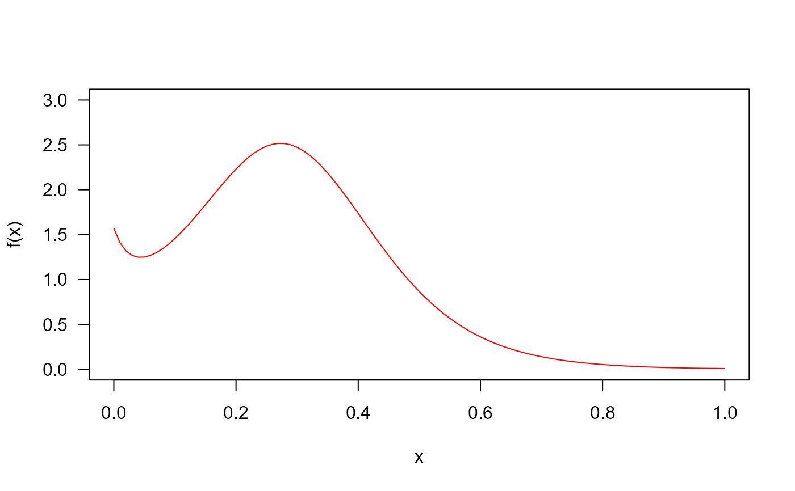
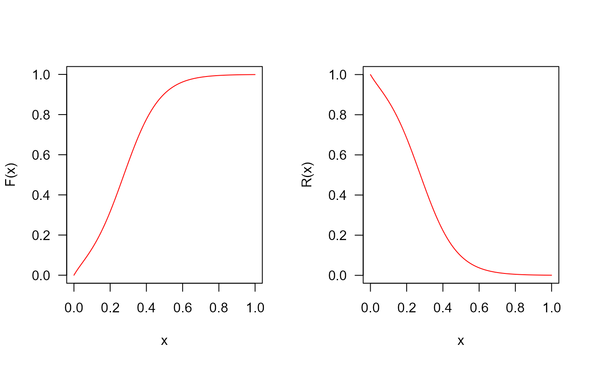
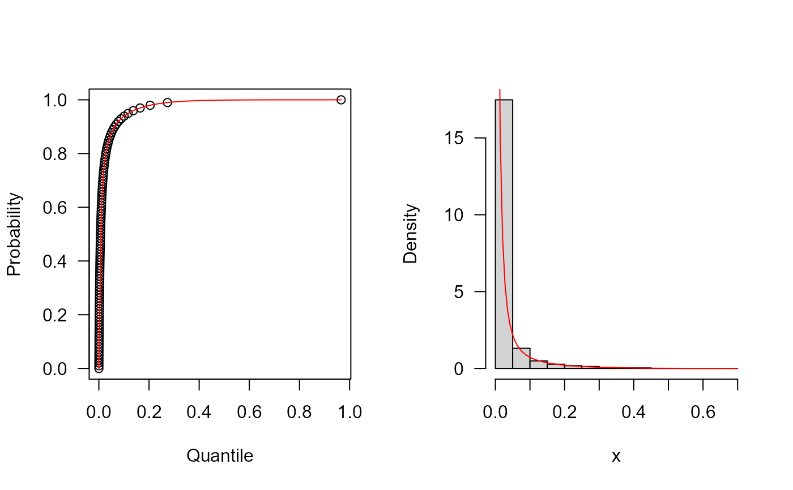
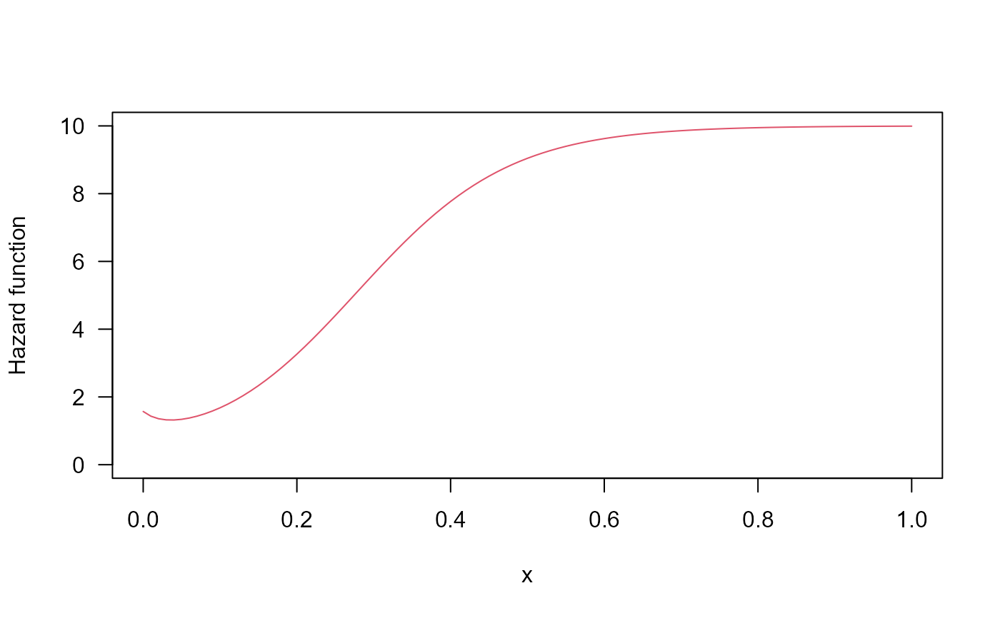

Density, distribution function, quantile function,
random generation and hazard function for the Cosine Sine Exponential distribution
with parameters mu, sigma and nu.
Usage
dCS2e(x, mu, sigma, nu, log = FALSE)
pCS2e(q, mu, sigma, nu, lower.tail = TRUE, log.p = FALSE)
qCS2e(p, mu, sigma, nu, lower.tail = TRUE, log.p = FALSE)
rCS2e(n, mu, sigma, nu)
hCS2e(x, mu, sigma, nu)Value
dCS2e gives the density, pCS2e gives the distribution
function, qCS2e gives the quantile function, rCS2e
generates random deviates and hCS2e gives the hazard function.
Details
The Cosine Sine Exponential Distribution with parameters mu,
sigma and nu has density given by
\(f(x)=\frac{\pi \sigma \mu \exp(\frac{-x} {\nu})}{2 \nu [(\mu\sin(\frac{\pi}{2} \exp(\frac{-x} {\nu})) + \sigma\cos(\frac{\pi}{2} \exp(\frac{-x} {\nu}))]^2}, \)
for \(x > 0\), \(\mu > 0\), \(\sigma > 0\) and \(\nu > 0\).
Examples
old_par <- par(mfrow = c(1, 1)) # save previous graphical parameters
## The probability density function
par(mfrow=c(1,1))
curve(dCS2e(x, mu=1, sigma=0.1, nu =0.1), from=0, to=1,
ylim=c(0, 3), col="red", las=1, ylab="f(x)")

## The cumulative distribution and the Reliability function
par(mfrow=c(1, 2))
curve(pCS2e(x, mu=1, sigma=0.1, nu =0.1),
from=0, to=1, col="red", las=1, ylab="F(x)")
curve(pCS2e(x, mu=1, sigma=0.1, nu =0.1, lower.tail=FALSE),
from=0, to=1, col="red", las=1, ylab="R(x)")

## The quantile function
p <- seq(from=0, to=0.99999, length.out=100)
plot(x=qCS2e(p, mu=0.1, sigma=1, nu=0.1), y=p, xlab="Quantile",
las=1, ylab="Probability")
curve(pCS2e(x, mu=0.1, sigma=1, nu=0.1), from=0, add=TRUE, col="red")
## The random function
hist(rCS2e(n=10000, mu=0.1, sigma=1, nu=0.1), freq=FALSE,
xlab="x", las=1, main="")
curve(dCS2e(x, mu=0.1, sigma=1, nu=0.1), from=0, add=TRUE, col="red")

## The Hazard function
par(mfrow=c(1,1))
curve(hCS2e(x, mu=1, sigma=0.1, nu =0.1), from=0, to=1, ylim=c(0, 10),
col=2, ylab="Hazard function", las=1)

par(old_par) # restore previous graphical parameters